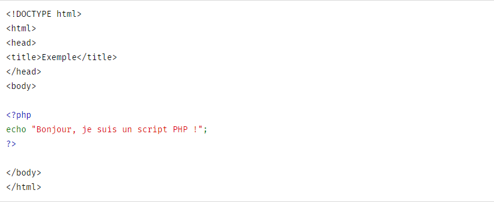

C'est quoi le PHP?
PHP (officiellement, ce sigle est un acronyme récursif pour PHP Hypertext Preprocessor) est un
langage de scripts généraliste et Open Source, spécialement conçu pour le développement
d'applications web. Il peut être intégré facilement au HTML.
Bien... mais qu'est ce que cela veut dire ? Un exemple :

Au lieu d'utiliser des tonnes de commandes afin d'afficher du HTML (comme en C ou en Perl), les pages
PHP contiennent des fragments HTML dont du code qui fait "quelque chose" (dans ce cas, il va
afficher "Bonjour, je suis un script PHP !"). Le code PHP est inclus entre une balise de début
>?php et une balise de fin ?< qui permettent au serveur web de passer en mode PHP.
Ce qui distingue PHP des langages de script comme le Javascript, est que le code est exécuté sur le
serveur, générant ainsi le HTML, qui sera ensuite envoyé au client. Le client ne reçoit que le
résultat du script, sans aucun moyen d'avoir accès au code qui a produit ce résultat. Vous pouvez
configurer votre serveur web afin qu'il analyse tous vos fichiers HTML comme des fichiers PHP.
Ainsi, il n'y a aucun moyen de distinguer les pages qui sont produites dynamiquement des pages
statiques.
Le grand avantage de PHP est qu'il est extrêmement simple pour les néophytes, mais offre des
fonctionnalités avancées pour les experts. Ne craignez pas de lire la longue liste de
fonctionnalités PHP. Vous pouvez vous plonger dans le code, et en quelques instants, écrire des
scripts simples.
Bien que le développement de PHP soit orienté vers la programmation pour les sites web, vous pouvez
en faire bien d'autres usages. Lisez donc la section Que peut faire PHP ? ou bien le tutoriel
d'introduction si vous êtes uniquement intéressé dans la programmation web.